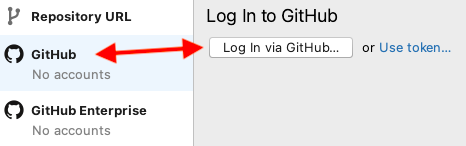
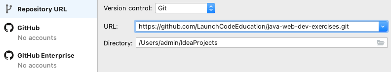
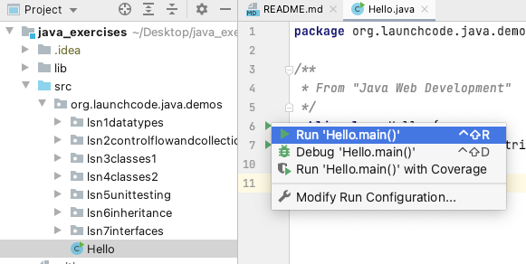
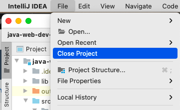
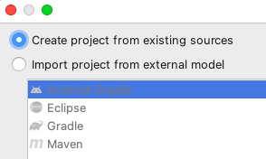

1.6. Java Web Dev Exercises¶
1.6.1. Initial Setup¶
The steps here will walk you through setting up the repository that you’ll use to study example code, work on studios, and complete your first assignment of this unit.
Create a Fork of LaunchCodeEducation/java-web-dev-exercises. Do not clone and create a local version of this repo just yet.
Open IntelliJ.
Note
If the app opens up to an existing project, simply close that window to return to the welcome screen.
If you prefer to have IntelliJ NOT open your most recent project:
- Mac users: Select IntelliJ > Preferences > Appearance & Behavior > System Settings and un-check Reopen projects on startup.
- Windows users: Use File > Settings > Appearance & Behavior > System Settings.
The Welcome to IntelliJ dialog looks different now. It includes a list of your most recent projects. However, we have the same three options in the upper-right corner. Select Get from VCS.
Select the GitHub option on the left side of the next window. Click Log In via GitHub or Use token and follow the on-screen prompts.
Set up IntelliJ to talk to your GitHub account.¶
Note
To work with a remote repository in IntelliJ, you need to configure the program to access your GitHub account. We recommend authenticating your account using a token. This takes only one brief extra step, and will prevent you from having to update IntelliJ settings whenever you change your GitHub password.
Now return to the Repository URL tab. From the URL dropdown options, select your fork of
java-web-dev-exercises, along with an appropriate destination directory (like the folder where you’ve stored other projects for this class).When ready, click the Clone button!
IntelliJ Repo Selection¶
If you’re asked about other settings for your project. Select the Next button every time to accept the default options.
When your project is ready, you’ll see a page that looks like the image below. Click on the area in the top left labelled Project.
Clicking on Project opens a side panel, displaying the file structure of the project you have just set up.
Double-clicking on the Hello file opens it in the workspace to the right.
To run the Hello program, click on the green arrow next to the class definition and select Run ‘Hello.main()’ from the dropdown menu.
IntelliJ Run File¶
After a few seconds, you should see a new window appear with your program’s output.
{kind=link}
{kind=link}
{kind=link}
{kind=link}
{kind=link}
With that, you’re ready to go!
1.6.2. Troubleshooting¶
1.6.2.1. ClassNotFoundException¶
After setting uo the project, if you experience java.lang.ClassNotFoundException
when you run the code, follow these steps:
Select File > Close Project. If you have any other IntelliJ projects open, close them as well.
Close Project¶
You should see the IntelliJ startup window. Click the gear icon next to
java-web-dev-exercisesand select Remove from Recent Projects.From the same startup window, select File –> New –> Project from Existing Sources.
When prompted, select the
java-web-dev-exercisesfolder and click Open.In the next panel, select the Create project from existing sources radio button. Click Next.
Create the project from the cloned repository.¶
Follow the steps that IntelliJ guides you through, accepting all defaults. Each time you are prompted to overwrite IntelliJ settings files, confirm that you want to do so.
Eventually the project will open, and you can successfully run your code!
{kind=link}
{kind=link}